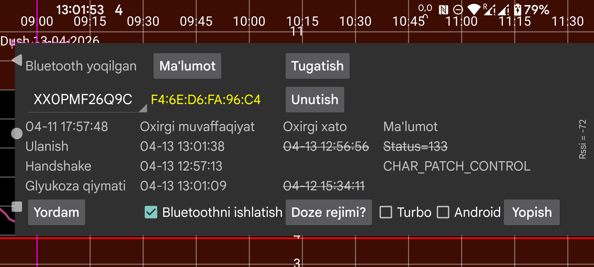

Ro‘yxatdagi tanlagichda sensor nomi ko‘rinadi. Agar Juggluco bir vaqtning o‘zida bir nechta sensordan foydalansa, qaysi sensor bo‘yicha ma’lumot ko‘rish shu yerda tanlanadi.
Doze mode Juggluco ishlashiga xalaqit beradigan batareya optimizatsiyalarini qanday o‘chirish haqida ma’lumot beradi.
Bluetooth tarixi: Libre 2 da tarix — o‘tgan davrning 15 daqiqalik glyukoza qiymatlari. Ilgari ular faqat skan orqali olinardi. Bu parametr yoqilganda tarix qiymatlari Bluetooth orqali ham olinadi. Bunda boshqa xatti-harakatlar ham o‘zgaradi: Libreview’ga oqim qiymatlarining o‘rtachasi o‘rniga tarix qiymatlari yuboriladi. Kamchiligi shundaki, bu sekinroq; ayniqsa Wear OS soatlarida bu sezilishi mumkin. Libre 3 va AQSh/Kanada/Avstraliya/Koreya Libre 2 sensorlarida bu parametrning ta’siri yo‘q, ular tarixni har doim Bluetooth orqali oladi.
Bug: faqat Wear OS dagi Libre 3 uchun bor. Samsung Galaxy Watch 5 va undan yuqori modellarda Samsung bu xatoni tuzatmaguncha yoqib qo‘yish kerak bo‘ladi. Aks holda glyukoza qiymatlari 1 daqiqada emas, 2 daqiqada bir keladi. Watch 5 dan Ultra gacha bo‘lgan qurilmalar Libre 2 qiymatlarini ham ikki daqiqalik oralig‘da oladi.
⏰: Dexcom G7 va ONE+ sensorlariga qayta ulanish vaqtini aniq ushlash uchun Juggluco ga budilnik funksiyasidan foydalanishga ruxsat beradi. Qurilma chuqur uyquda bo‘lsa, qayta ulanish uchun uyg‘onmay qolishi mumkin. Muallifning Wear OS soatida aynan tun payti shunday bo‘lgan. Telefon esa odatda bu parametrsiz ham yaxshi ishlaydi, hatto ba’zan shu parametr yoqilganda yomonroq ishlashi mumkin.
Ruxsat: eski Juggluco versiyalarida sensor qurilma manzilini topish uchun joylashuv ruxsati kerak edi. Hozir foydalanilgan sensorlarning ko‘pida bu endi shart emas. Balki ayrim boshqa sensorlarda hali ham kerak bo‘lishi mumkin; shunday bo‘lsa yoqishingiz mumkin. Birinchi aloqa o‘rnatilgandan keyin Juggluco qurilma manzilini saqlab qoladi va keyin joylashuv ruxsati foydasiz bo‘lib qoladi. Qurilma manzili ma’lum bo‘lsa, u sensor identifikatoridan keyin ko‘rsatiladi; qizil rang AQSh tipidagi sensorni bildiradi. Android 12 da yangi Yaqin qurilmalar ruxsati bor; u Bluetooth qurilma manzilini qidirishda joylashuv ruxsati o‘rnini bosishi mumkin, lekin keyingi Bluetooth ulanishlari uchun ham kerak bo‘ladi.
Unutish: Juggluco ga qurilma manzilini unutib, uni qayta topishni buyuradi. Ba’zi sensorlarda ulanish uchun bu kerak bo‘ladi va Juggluco buni ba’zan avtomatik ham bajaradi. Shu tugma bilan buni qo‘lda ham buyurish mumkin.
To‘xtatish: shu sensorga Bluetooth orqali ulanishni to‘xtatadi. Keyinroq yana shu sensordan oqim qiymatlarini olish uchun sensorni qayta skan qilish kifoya. Agar sensor soat bilan to‘g‘ridan-to‘g‘ri ulangan bo‘lsa, avval u ulanishni o‘chirib, keyin telefonda To‘xtatish, soatda esa Sinx ni bosish kerak.
Juftlikni bekor qilish: Aidex X sensorlari ular juftlangan telefon yoki soatni eslab qoladi va boshqa qurilma bilan juftlashishni rad etadi. Shu tugma bosilganda sensorga buyruq yuboriladi va muvaffaqiyatli bo‘lsa, yana boshqa telefon yoki soatlar unga ulanishi mumkin bo‘ladi. Agar chap menyu→Watch→Wear OS sozlash→Soatning sensor bilan to‘g‘ridan-to‘g‘ri ulanishi orqali sensorni telefon va soat o‘rtasida ko‘chirayotgan bo‘lsangiz, juftlikni bekor qilish ham avtomatik bajariladi; bunda bu tugmadan foydalanmang.
Tozalash: faqat Aidex X sensorlariga ulanishda ko‘rinadi. Bu tugma sensor ichidagi barcha glyukoza qiymatlarini o‘chiradi va sensorni go‘yo yangi sensor kabi qayta ishga tushiradi. Shunda sensorni 15 kundan ko‘proq ishlatish mumkin bo‘lishi mumkin, lekin muallif sinovida tugash sanasidan keyingi qiymatlar deyarli yaroqsiz bo‘lgan va parallel ishlatilgan Libre 3 ning taxminan yarmicha qiymat ko‘rsatgan.
Qayta o‘rnatish: faqat Sibionics 2 uchun. Transmitterdagi sensor almashtirilganda shu tugmani bosish kerak bo‘ladi — Juggluco eski sensorga ulangan bo‘lsa ham, yangisiga ulangan bo‘lsa ham. Agar transmitter allaqachon boshqa ilova tomonidan qayta o‘rnatilgan bo‘lsa, bu tugmani bosmang.
Turbo: sensor bilan aloqa o‘rnatishga ko‘proq kuch sarflaydi; bu ba’zan ulanish xatolarini kamaytirishi mumkin, lekin batareya sarfini oshirishi ham mumkin. Muallif tajribasida bu Watch4 da FreeStyle Libre 2 bilan kerak bo‘lgan, lekin FreeStyle Libre 3 da va ko‘rilgan smartfonlarda kerak bo‘lmagan.
Android: sensor bilan ulanishni Juggluco o‘rniga Android bajaradi. Odatda bundan foydalanmang; ko‘p hollarda ulanish sekinroq bo‘ladi. Bu parametr bir paytlar nosoz Android 13 versiyasi sabab qo‘shilgan edi, keyin bu xato tuzatildi. Faqat shu sensor sahifasida yaqindagi vaqtlar umuman ko‘rinmasa, ya’ni ulanish xatolari ham yo‘q, sensor xatolari ham yo‘q, lekin qiymatlar ham kelmayotgan bo‘lsa va Bluetooth ni o‘chirib-yoqish vaqtincha yordam bersa, shunda yoqib ko‘rish mumkin. Bir telefonning o‘zida Yevropa Libre 2 ni bir vaqtda ikkita ilova bilan ulashga uringanda ham shunday holat paydo bo‘lishi mumkin.
Ma’lumot: sensorning boshlanish va tugash vaqtlarini, oxirgi skan va oxirgi oqim vaqtlarini ko‘rsatadi.
FreeStyle Libre 2 ga Low Energy Bluetooth orqali ulanish uchun Bluetooth yoqilgan bo‘lishi kerak. Sensor ushbu ilova bilan muvaffaqiyatli skan qilinmaguncha hech narsa sodir bo‘lmaydi. Sensor FreeStyle reader yoki boshqa telefon ilovalari bilan ulangan bo‘lmasligi kerak. Abbott ning Libre ilovasi o‘chirib tashlangan, o‘chirib qo‘yilgan yoki majburan to‘xtatilgan bo‘lishi kerak. Agar sensorni FreeStyle reader bilan ishga tushirgan bo‘lsangiz va uni o‘chirib bo‘lmasa, reader ni Faraday qafasi kabi signalni to‘suvchi joyga qo‘yib sensorga aloqa qilishiga yo‘l qo‘ymaslik mumkin.
Bluetoothni ishlatish yoqilgan bo‘lishi kerak.
Yuqoridagi barcha shartlar bajarilgan bo‘lsa ham, ilova sensor qiymatlarini qabul qila boshlashi uchun ancha vaqt ketishi mumkin. Ko‘pincha bu bir daqiqada bo‘ladi, ba’zan esa ancha uzoq cho‘ziladi. Eng ko‘p muammo Ulanish bosqichi da bo‘ladi. Eng ko‘p uchraydigan holat — status=133; bu onConnectionStateChange(...) dagi status qiymati bo‘lib, odatda Bluetooth qurilmasi topilmadi degani. Deyarli har doim bu shunchaki qurilma topilguncha kutishni anglatadi. Ba’zan sensor boshqa qurilmaga ulangan bo‘lishi, vaqtincha yomon ishlashi, boshqa qurilmalar xalaqit berishi yoki Android Bluetooth qismi nosoz ishlashi mumkin. Bluetooth ni o‘chirib-yoqish, telefonni qayta yuklash yoki boshqa qurilmalar Bluetooth ini o‘chirib qo‘yish yordam berishi mumkin. Ba’zan sensorni qayta skan qilish ham muammoni hal qiladi.
Suv, shu jumladan tanadagi suv ham signalni susaytirishi mumkin. Shu sababli sensor bir qo‘lda, Wear OS soati esa boshqa qo‘lda bo‘lsa va tana soat bilan sensor orasiga tushib qolsa, ulanish yomonlashishi mumkin.
Accu‑Chek SmartGuide foydalanuvchilaridan biri Bluetooth qidiruvi sensorni topa olmaganda, Android dagi Bluetooth qurilmalari ro‘yxatiga kirib sensorni tanlab, Unutish ni bosish yordam berganini bildirgan.
Sensorni boshqa telefonda Juggluco bilan, Bluetoothni ishlatish yoqilgan holda, skan qilish ulanishni shu telefondan tortib oladi. Keyin ulanishni qaytarib olish uchun biroz vaqt ketishi, hatto orada yana skan qilish ham kerak bo‘lishi mumkin.